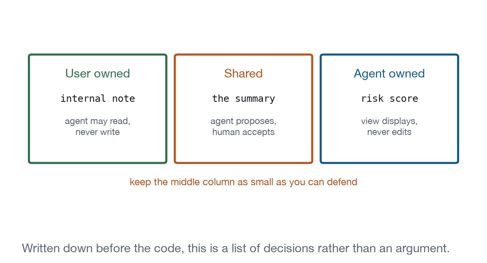

Chapter 20
State Ownership and Concurrency
Two parties can write to the same document and neither knows what the other is doing. Declare who owns what before it happens, because afterwards there is no good default.
Every collaborative editor ever built has had to answer this question, and the answers are well known: locks, operational transforms, conflict-free replicated data types, last-writer-wins with a notice. What is different here is the shape of the second party.
The agent is not another user. It is fast, it works in bursts, it cannot see the screen, it does not know the human is mid-sentence, and it will happily rewrite a paragraph half a second after the human started typing in it. It also cannot be asked to wait, because it is not present in the way another person would be.
So this chapter is not about merge algorithms. It is about deciding, in advance, which regions of your state each party owns, and what happens at the boundary.
The ownership map
state.ownershipCoreLevel 4Yours to buildDeclare who owns each region when both parties can write.
- Ground
- The view implements it. Nobody else can.
- Recipes
- Document Editor, Workflow Builder
- Demo
- lab-ownership
Every region of application state gets one of three labels.
User-owned. The agent may read it and may propose changes to it in conversation. It may not write it. Personal notes, drafts the user has not shared, anything where the point is that a person said it.
Agent-owned. The agent computes it and the view displays it. The user does not edit it directly; if they disagree, they change the inputs. Risk scores, classifications, generated summaries that are labelled as generated.
Shared. Both may write, and therefore a conflict policy is required. This is where all the difficulty lives, and the useful discipline is to keep the shared set small.
The demonstration has one region of each, and the labels are visible in the interface. That visibility is not decoration: a user who can see that the risk score is the agent’s and the note is theirs can predict what will change under them.
Write the map down before the code. It takes ten minutes and it converts an argument about merge semantics into a list of decisions. Recipe 4 declares its map in the recipe entry, and the map is what determined which tools the view registers.

Conflict policy
state.conflictCoreLevel 4Yours to buildDecide what happens when they both do.
- Ground
- The view implements it. Nobody else can.
- Recipes
- Document Editor
- Demo
- lab-ownership
For each shared region, pick one and say so in the interface.
Reject. The write fails and the writer is told. Appropriate when the region is small and the loss is cheap. The tool returns isError: true with an explanation, which the agent can relay.
Last writer wins. The later write applies. Simple, and dangerous exactly when the human is the earlier writer, because they lose work they can see on screen. Acceptable only with a visible notice and an undo.
Merge. For structured state where writes touch different fields, apply both. Requires that your state actually be structured rather than a blob of HTML, which is a good reason to structure it.
Ask. Hold the write, show both versions, let the human choose. The heaviest and the safest, and the right default when the human is actively editing.
The demonstration implements the last one with a rule that costs eight lines: while the human has typed within the last 1.5 seconds, hold the agent’s write and offer it when they stop.
Extracted from from apps/labs/lab-ownership/index.html
bridge.registerTool({
name: "rewrite_summary",
description: "Replace the shared summary text",
inputSchema: { type: "object", properties: { text: { type: "string" } },
required: ["text"] },
annotations: { readOnlyHint: false },
}, async ({ text }) => {
if (userTyping) {
pending = text;
setOwner("Agent write held: the human is typing.", "warn");
return { content: [{ type: "text",
text: "Held. The user is editing; the change will be offered to them." }] };
}
offer(text);
return { content: [{ type: "text", text: "Offered to the user for review." }] };
});Two things to notice. The tool tells the agent what actually happened, so it does not report to the user that the summary has been rewritten when it has not. And “held” and “offered” are different outcomes with different words, because an agent that reads “held” can decide to wait and try again.
Refusing a write
The user-owned region needs a tool too, and the tool’s job is to say no usefully.
Extracted from from apps/labs/lab-ownership/index.html
bridge.registerTool({
name: "write_note",
description: "Attempt to write the user-owned note",
inputSchema: { type: "object", properties: { text: { type: "string" } },
required: ["text"] },
annotations: { readOnlyHint: false },
}, async () => ({
isError: true,
content: [{ type: "text",
text: "The internal note is user owned. Propose a change in the "
+ "conversation instead of writing it." }],
}));The alternative, not registering the tool at all, is worse. A model that cannot find a way to write the note will try adjacent tools, or will tell the user it has updated the note when it has not. An explicit refusal that names the correct route is a better interface for a model in exactly the way it is for a person.
Optimistic UI and rollback
The other concurrency problem is with the server rather than with the agent.
A view that applies a change locally and then calls a tool has committed to an outcome it does not have yet. When the call fails, or is cancelled, or the frame is torn down mid-flight, the interface is showing something that never happened.
The rule. Optimistic updates need a compensating action recorded at the same moment they are applied, which is the same transaction shape as Chapter 15’s undo. On failure, apply the compensation and say why. On cancellation, apply the compensation only for steps that did not complete, and say how far it got: Recipe 11 reports “stopped after three of five steps, completed steps were not rolled back”, which is unglamorous and true.
The unrecoverable case. If the frame is torn down while a write is in flight, nobody rolls anything back. The server may have applied it. This is why writes that matter should be idempotent and keyed, so the next render can ask what actually happened rather than assuming.
Making the agent’s changes undoable
The single most important thing in this chapter, and it belongs to Chapter 15 mechanically.
Every agent write goes onto the same undo stack as the user’s own edits, as one transaction, with a label that names the agent. One Cmd+Z restores the human’s words. Recipe 4 does this for accepted rewrites, and the whole safety argument for agent-assisted editing rests on it: a change you can take back in one keystroke is a change you can afford to let a model make.
An agent whose changes are outside the undo stack is an agent whose changes are permanent, and users respond to permanent changes by not using the feature.
What to remember
Three labels, four policies, and a decision made before the code rather than after the bug report. Keep the shared set small, hold agent writes while a human is typing, tell the agent what actually happened, and put everything the agent does on the undo stack. That is the entire chapter, and every part of it is cheaper to build than the merge algorithm you were considering.